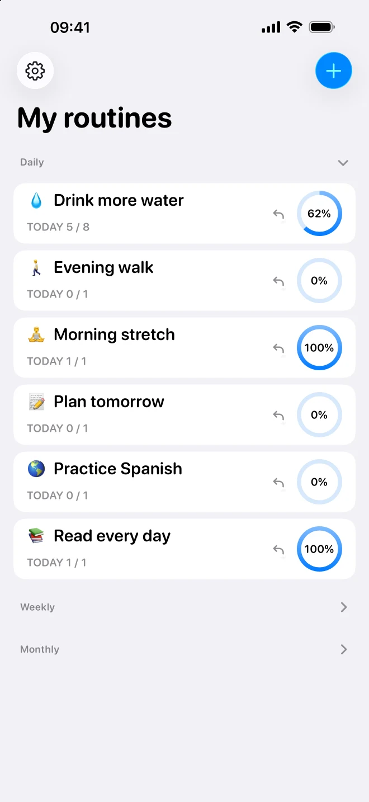
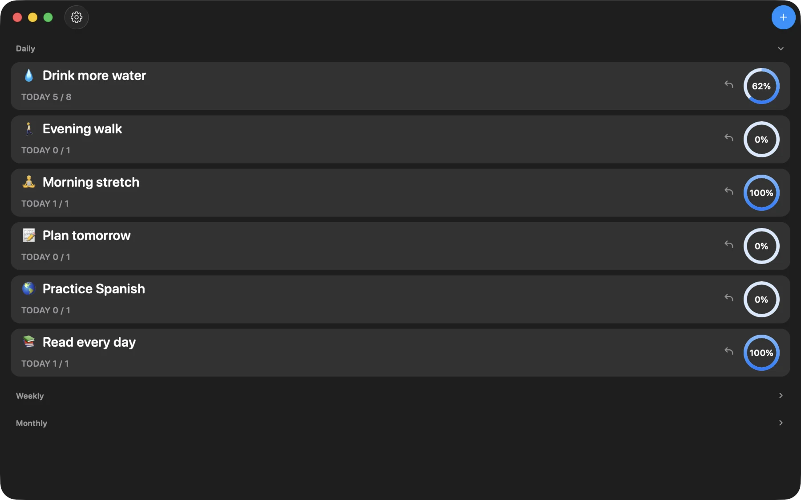

Find your rhythm
Daily, weekly, or monthly goals. Build a routine around your life.
Small steps. At your pace.
A calm place for the things you want to do more often. Track your routines, see your progress, and keep going.
Native for iPhone, iPad & Mac

Less noise. More routine.
Daily, weekly, or monthly goals. Build a routine around your life.
Keep a history of the small steps that add up over time.
Set local reminders for the routines you want to come back to.
Space for your day
A native experience for iPhone, iPad, and Mac.

The next chapter
Routine 1.1.0 is being prepared with every feature available for free. No subscriptions, in-app purchases, or paywalls.
Routine is in maintenance mode. The focus is on keeping the app usable and addressing essential fixes, with no commitment to regular new features.
This update has not shipped yet. If you have a subscription or paid-access question about version 1.0.4, read the transition notice.
A little peace of mind
Routine stores your habits on your device. Official versions with iCloud support can sync through your Apple account. The 1.1.0 update is being prepared without developer analytics or advertising trackers.
Privacy for each versionKeep it simple
Need a hand with Routine?
Get support